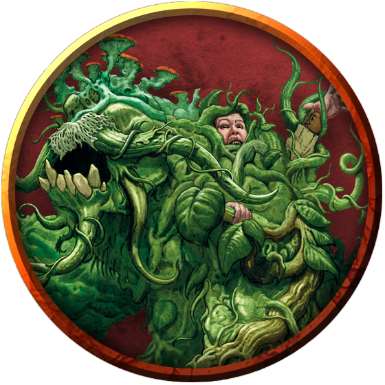

Shambling Mound
A shambling mound, sometimes called a shambler, trudges ponderously through bleak swamps, dismal marshes, and rain forests, consuming any organic matter in its path. This rotting heap of animated vegetation looms up half again as tall as a human, tapering into a faceless "head" at its top.

All-Consuming Devourers. A shambling mound feeds on any organic material, tirelessly consuming plants as it moves and devouring animals that can't escape it. Only the shambling mounds' rarity and plodding speed prevent them from overwhelming entire ecosystems. Even so, their presence leeches natural environments of plant and animal life, and an unsettling quiet pervades the swamps and woods haunted by these ever-hungry horrors.
Unseen Hunters. Composed of decaying leaves, vines, roots, and other natural swamp and forest compost, shamblers can blend into their environs. Because they move slowly, they rarely attempt to pursue and catch creatures. Rather, they remain in place, sustaining themselves by absorbing nutrients from their surroundings as they wait for prey to come to them. When a creature passes near or alights upon a shambling mound, the monster comes to life, seizing and absorbing the unwary prey.
Spawned by Lightning. A shambling mound results from a phenomenon in which lightning or fey magic invigorates an otherwise ordinary swamp plant. As the plant is reborn into its second life, it chokes the life from plants and animals around it, mulching their corpses in a heap around its roots. Those roots eventually give up their reliance on the soil, directing the shambling mound to seek out new sources of food.
The Weed that Walks. The instinct that drives a shambling mound is its central root-stem, buried somewhere inside its ponderous form. The rest of a shambler consists of the rotting heap that it simultaneously accumulates and feeds on, which protects the root-stem and animates to smash and smother the life from any creature.
The dense mass of a shambling mound's body shrugs off the effects of cold and fire. Lightning reinvigorates the root-stem, strengthening the shambling mound and bolstering its consumptive drive.
Despite its monstrous form, the shambling mound is a living plant that requires air and nourishment. Although it doesn't sleep the way an animal does, it can lie dormant for days on end before rising to hunt for food.
A Resurgent Menace. If a shambling mound faces defeat before an overwhelming foe, the root-stem can feign death, collapsing the remains of its mound. If not subsequently killed, the root-stem beds down in the shambler's remains to slowly regrow its full body, then once again sets out to consume all it can. In this way, shambling mound infestations long thought destroyed can recur time and again.
Environment
(FIXME)
Token

Shambling Mound
Large plant, unaligned
- Armor Class 15 (natural armor)
- Hit Points 136 (16d10 + 48)
- Speed 20 ft., swim 20 ft.
STR DEX CON INT WIS CHA 18 (+4) 8 (-1) 16 (+3) 5 (-3) 10 (+0) 5 (-3)
- Proficiency Bonus +3
- Saving Throws
- Damage Vulnerabilities
- Damage Resistances cold,fire
- Damage Immunities lightning
- Condition Immunities blinded,deafened,exhaustion
- Skills Stealth +2
- Senses blindsight 60 ft. (blind beyond this radius),passive Perception 10
- Languages —
- Challenge 5
Lightning Absorption. Whenever the shambling mound is subjected to lightning damage, it takes no damage and regains a number of hit points equal to the lightning damage dealt.
Actions
Multiattack. The shambling mound makes two slam attacks. If both attacks hit a Medium or smaller target, the target is grappled (escape DC 14), and the shambling mound uses its Engulf on it.
Slam. Melee Weapon Attack: +7 to hit, reach 5 ft., one target. Hit: 13 (2d8 + 4) bludgeoning damage.
Engulf. The shambling mound engulfs a Medium or smaller creature grappled by it. The engulfed target is blinded, restrained, and unable to breathe, and it must succeed on a DC 14 Constitution saving throw at the start of each of the mound's turns or take 13 (2d8 + 4) bludgeoning damage. If the mound moves, the engulfed target moves with it. The mound can have only one creature engulfed at a time.